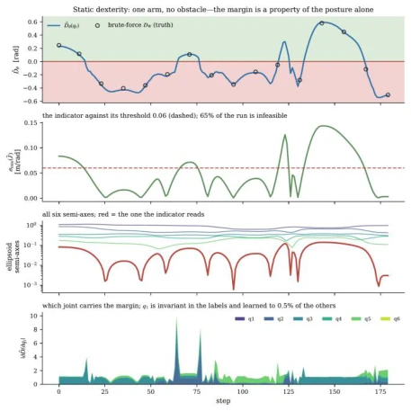
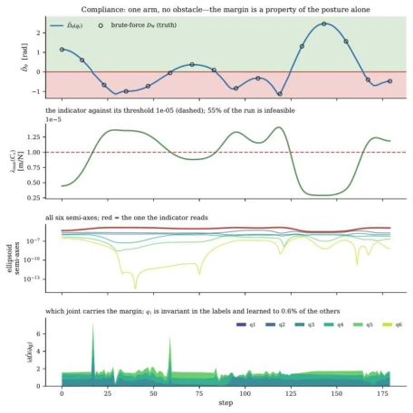
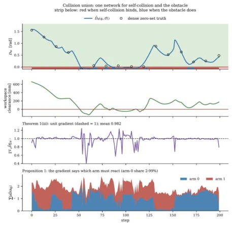
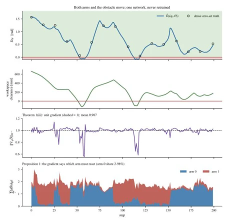
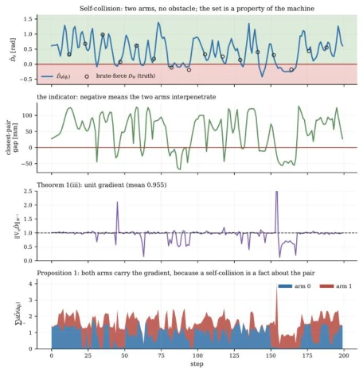
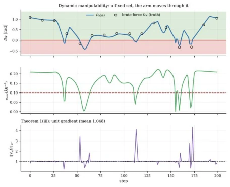
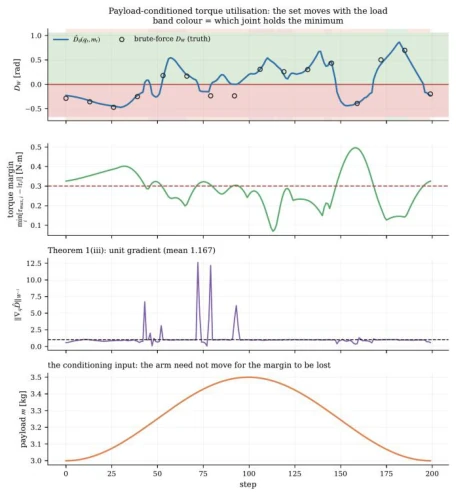

← 返回← Back
Feasibility Distance Fields for Heterogeneous Constraints in Robot Configuration Space
Xijing Cui, Huayan Pu, Jun Luo, Gang Wang
abspdf
论文点评Review
这篇论文试图用数学上的“距离场”统一机器人各种约束，想法很性感。把碰撞、关节限位、柔顺性、力矩全变成“配置空间里的距离”，理论上确实优雅，梯度归一化后直接可比。但作者把“可行性”定义得过于理想化，要求所有约束集必须闭合且非空，这在奇异点附近或动态负载下其实很难保证。而且依赖神经网络近似，虽然用了 Eikonal penalty，但中轴线附近的误差依然明显。与其说是新理论，不如说是把经典距离场理论硬套到了更多约束上，适合理论派，实战派可能觉得调参比写约束还累。
—
研究动机Motivation
现有工作如 Khatib (1986) 和 Zucker (2013) 主要关注工作空间清除，Li (2024) 虽提出配置空间距离场，但仅限于几何碰撞。机器人实际运行中，关节限位、奇异点、柔顺性、力矩余量等指标单位各异，无法直接比较或组合。没有统一度量，控制器难以权衡哪个约束最紧迫。本文旨在解决异构约束不可比的问题，将不同物理量转化为配置空间下的统一距离，提供通用的运动预算。
—

Figure 2(a). Static dexterity.

Figure 2(b). Cartesian compliance.方法Method
核心是可行性距离场 (FDF)，定义为配置空间到不可行集并集的距离。首先验证各类约束（碰撞、柔顺性等）是否构成“可容许”的闭集，确保连续性。利用经典距离集理论，证明 FDF 满足 1-Lipschitz 连续和单位对偶梯度范数。异构约束通过逐点最小值组合，多机器人场景下梯度呈块稀疏。最后用 SIREN 网络训练，结合距离损失和 Eikonal 惩罚项，学习近似场。具体而言，对于柔顺性约束，必须使用 Compliance 而非 Stiffness 以保证连续性；对于力矩约束，需将负载作为条件输入。该方法避免了不同指标间的任意归一化，直接输出配置空间内的安全余量。整个流程包括：1. 定义约束指标函数；2. 检查闭集性质；3. 构建距离场；4. 神经网络拟合。通过这种方式，不同物理单位的约束被统一为弧度制的距离，使得控制器可以直接比较和权衡。
—

Figure 1(c). Union of external and self-collision fields, conditioned on obstacle position.

Figure 1(a). External-collision FDF along a moving-obstacle trajectory.

Figure 1(b). Self-collision FDF along a dual-arm trajectory.

Figure 2(c). Dynamic dexterity.实验Experiments
在 UR5e 和双臂单元上测试 7 种场。8000 个配置采样，梯度范数接近 1，投影残差小。外部碰撞和组合碰撞在 3cm 内成功率超 90%。验证了力矩约束随负载条件化的能力。发现中轴线附近近似误差较大，稀疏采样边界处也有问题。证明了统一距离场在数值上的可行性，但计算成本较高。具体指标显示，最大可行侧割线比为 0.920，平均学习梯度范数在 0.994 至 0.998 之间。双臂场景下，梯度稀疏性有效识别了需反应的机器人。尽管存在中轴线误差，但整体证明了该框架在异构约束统一度量上的有效性。
—

Figure 2(d). Payload-conditioned grinding field.